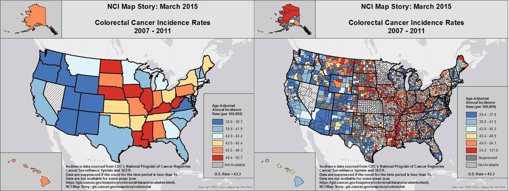
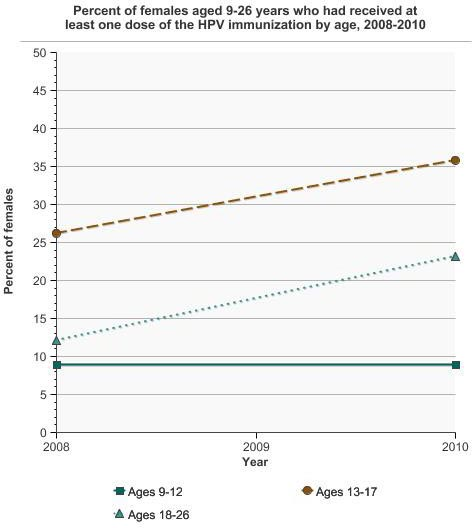
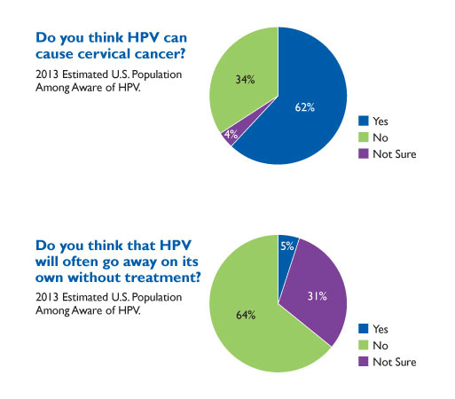
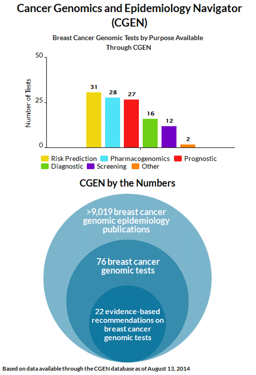

Infographic Archive
Rates of New Cancer Cases and Deaths

Percentage of nonsmokers aged 3 to 11 years old, exposed to secondhand smoke between 1988 and 2014

![Percentage of nonsmokers aged 3 to 11 years old, exposed to secondhand smoke between 1988 and 2014. HP 2020 Target TU-11.1: 47%. Source: National Center for Health Statistics. National Health and Nutrition Examination Survey. 1, The 1988-1994 estimate for ages 3-11 is for ages 4-11. 2, As measured by a serum cotinine level of greater than 0.05 ng/ml and less than or equal to 10 ng/ml. Data are not age-adjusted. Weighted regression lines are calculated using the Joinpoint Trend Analysis Software, Version 4.6 February 2018, National Cancer Institute. The AAPC is the Average Annual Percent Change and is based on the APCs calculated by Joinpoint. * The Annual Percent Change (APC)/Average Annual Percent Change (AAPC) is statistically significant.](/images/17884-NCI-DCCPS-March-Featured-Infographic.png)
Which of the following health conditions do you think can result from drinking too much alcohol?


Tobacco Use & Lung Cancer


Five-Year Survival for Selected Cancers Among Children

Overall Mortality Rate for Childhood Cancer


National Trends for Childhood Cancers (Age 0-19)

5-Year Survival Rates for 2007 – 2013 for Stage I of the Most Common Cancers

National Incidence Trends

Colorectal Test Use Rates for Adults Aged 50-75 Years, Both Sexes, 2000-2015
![Source: Centers for Disease Control and Prevention. National Center for Health Statistics. National Health Interview Survey. HP 2020 Target C-16: 70.5%. 1Colorectal test use rates are defined as the combined percentage of people who have received a home FOBT in the last year or had a sigmoidoscopy in the past 5 years or had a colonoscopy in the past 10 years. Each surveyed individual can only contribute once to the numerator of the calculation. Estimates may be underreported for 2000-2008 because respondents to the 2000-2008 NHIS were asked about their most recent proctoscopy, colonoscopy, or sigmoidoscopy, while 2010 respondents were asked about their most recent sigmoidoscopy and, separately, about their most recent colonoscopy. Data are age-adjusted to the 2000 US standard population using age groups: 50-64, 65-75. Weighted regression lines are calculated using the Join point Regression Program, Version 4.3.1.0 April 2016, National Cancer Institute. The AAPC is the Average Annual Percent Change and is based on the APCs ca lcu lated by Join point. *The Annual Percent Change (APC)/Average Annual Percent Chance (AAPC) is statistica lly significant. NSC: Non-Significant Change.](/images/NCI-DCCPS-Cancer-Trends-Progress-Report-Graphic.png)
Smoke-free Air Law Coverage By State (2017)

See the Tobacco Control Policy tool website for links to this and other tobacco control policy-related data: https://tobaccopolicyeffects.org/.
Cervical Cancer Trends: New Cases & Death Rates, 1992-2014

Monograph 22: A Socioecological Approach to Addressing Tobacco-Related Health Disparities

Patient-Provider Discussions About Lung Cancer Screening Remain Infrequent

Annual Report to the Nation on the Status of Cancer, 1975-2014, Featuring Survival

Cancer Trends Progress Report: Physical Activity Trends

Age-Adjusted Incident Rates by State (2009 to 2013) Lung Cancer

Estimated Number of Cancer Survivors in the U.S., by Site

American Cancer Society. Cancer Treatment & Survivorship Facts & Figures 2016-2017. Atlanta: American Cancer Society; 2016.
Miller, K. D., Siegel, R. L., Lin, C. C., Mariotto, A. B., Kramer, J. L., Rowland, J. H., Stein, K. D., Alteri, R. and Jemal, A. (2016), Cancer treatment and survivorship statistics, 2016. CA: A Cancer Journal for Clinicians.
Female Breast Cancer Incidence

This map created with NCI GeoViewer
Number of New Cancer Cases & Deaths Each Year
Estimated Cancer Prevalence by Age in the US Population from 1975 to 2040
SEER Cancer Statistics Review (CSR) 1975-2013
The Annual Report to the Nation on the Status of Cancer: Incidence Rates for Liver Cancer by Race/Ethnicity During 2008-2012
The Annual Report to the Nation on the Status of Cancer: Long-term mortality trends, based on AAPC, 2003-2012
Monitoring a Changing Health Information Environment
Up for a Challenge? Stimulating Innovation in Breast Cancer Genetic Epidemiology

Up for a Challenge? Stimulating Innovation in Breast Cancer Genetic Epidemiology
From NCI’s Annual Plan & Budget Proposal for Fiscal Year 2017
March 2015. Colorectal Cancer Incidence Rates 2007-2011
March 2015. Colorectal Cancer Screening Rates 2012
Annual Report to the Nation on the Status of Cancer, 1975-2011
The Annual Report to the Nation on the Status of Cancer: Long-term mortality trends, based on AAPC, 2001-2011
March 19, 2015: Percent of females aged 9-26 years who had received at least one dose of the HPV immunization by age, 2008-2010
December 9, 2014: Preventing Cancer through Increased Human Papillomavirus (HPV) Vaccine Uptake
September 18, 2014: Cancer Prevalence and Cost of Care Projections

Estimates in 2010 dollars. September 18, 2014: Cancer Prevalence and Cost of Care Projections
Source: Mariotto AB, Yabroff KR, Shao Y, Feuer EJ, Brown ML. Projections of the costs of cancer care in the United States: 2010-2020. J Natl Cancer Inst 2011;103:117-128.
September 2, 2014: Smoothed age-adjusted death rates over time for colorectal cancer, using the Animated Historical Cancer tool.
August 8, 2014: Breast Cancer Genomic Tests Application Type
July 17, 2014: Policy Environment for Physical Education by State: Classification of Laws Associated with School Students (CLASS).
June 19, 2014: United States Average Global Solar Radiation / Percent of People Who Rarely or Never Wear Sunscreen When Outside On A Warm, Sunny Day

June 1, 2014: Estimated and Project Number Estimated and projected number of cancer survivors in the United States from 1977-2022 by years since diagnosis May 7, 2014 The NCI Director referred to this DCCPS graphic on aging and cancer in his testimony to the U.S. Senate on May 7, 2014